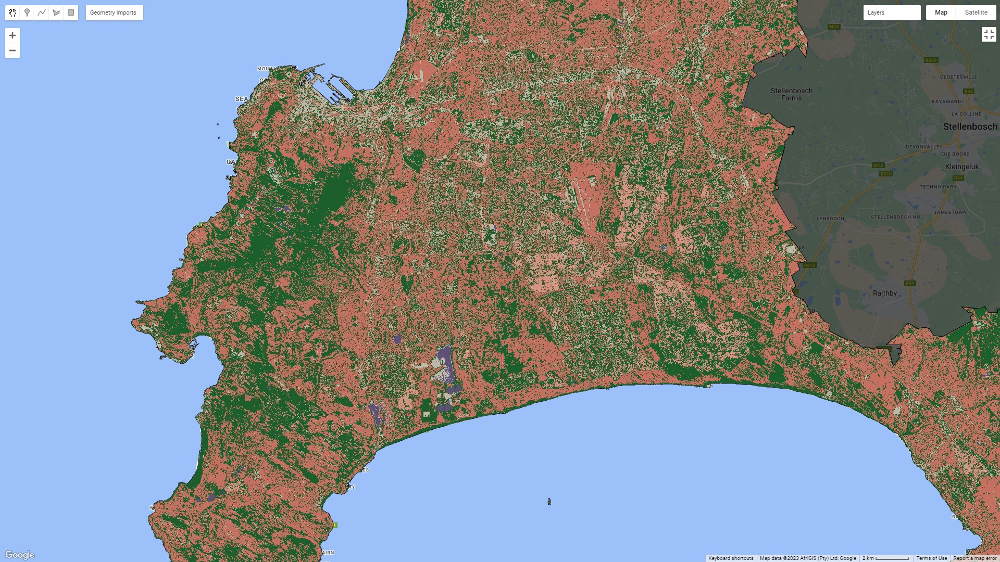

6 Week 6
7 Week 6: Classification 1
7.1 Summary
This week we got into machine learning with Google Earth Engine.
We covered a range of supervised machine learning tools – from simple linear regression (which is a very basic form of supervised learning) to Classification and Regression Trees (CART) and Random Forest methods. Earth Engine lets you run all of these methods in just a few lines of code, and they provide a very good way to predict or classify what is happening in an area using remotely sensed data.
This feels like the area where Earth Engine really comes into its own: it’s amazing to have such a range of analysis-ready imagery readily available, and to be able to run these algorithms so quickly. I’ll discuss CART and Random Forest here, before getting into some of the ways it can be applied.
7.1.1 CART
CART works by subsetting the data in a series of forks. Each fork is split into a predictor variable and each node has a prediction at the end, as shown below:

CART can be used on both categorical (classification), as well as continuous (regression) outcome variables. The algorithm splits the data in order to have the lowest mean square error (for continuous data) or gini impurity (for categorical data) in each split. The way that I understand this intuitively is that the model will select the split at each point that minimises the variance in the resulting subset. In the case of categorical variables, the value for each subset is the majority class of the response variable falling into that category; in the case of continuous data, the output is the mean of the records in the subset. The algorithm will run through this process until it reaches a pre-defined stopping criteria.
So unlike linear regression, where you’re trying to arrive at a single coefficient which estimates the slope of a relationship, CART outputs a series of mean values for different subsets of the data (in the case of a continuous outcome variable). This makes it useful for working with nonlinear datasets; the art of using CART is in deciding when and where to stop splitting the data. It’s possible to keep going all the way down to individual records in the dataset, in which case the model will be perfectly predictive, but then it is unlikely to generalise well to unseen data as the model will be overfit on the dataset it has been trained on. Conversely, if there are too many records in each subset, the model is likely to be unreliable as a predictor as it will be underfit. This image shows how a decision tree algorithm might subset a two-dimensional dataset with a continuous outcome variable:

Here’s an example of a CART classifier on land use in Cape Town, using Sentinel 2 data (I’ve zoomed in so that a bit more of the detail is visible):

7.1.2 Random Forest
Where decision trees really come into their own is when many trees are used together as part of an ensemble. This is called a random forest. A random forest works by creating a whole lot of subsets of the training data, and creating a decision tree for each subset. The results for each subset are weighed together to arrive at a final prediction. While one tree might produce unreliable results, this can be overcome by creating many trees!
Here are the results of a Random Forest Classifier on the same imagery:

There isn’t a huge difference between either image – there’s definitely more noise in the CART output, and you can see more of the structure of the city coming through from the Random Forest model. These aren’t perfect land use classifications by any means, but it’s a pretty impressive result considering that the input classifiers were just some polygons I selected on the true colour composite. It’s easy to see how this could quickly be turned into a useful land use/land cover output with better input classifications.
7.1.2.1 Accuracy
There are a couple of ways to measure the accuracy of this model. The one I have generated returns an Out of Bag Error Estimate of 14.5%. This is fairly close to the model’s validation accuracy (its performance on unseen data), which was 0.87%. The training accuracy was much higher, at 99.6%. I’ll talk more about accuracy measures next week.
7.2 Applications
There are many ways that these models can and have been applied. There are applications around land cover and land use that I’ve described above.
Mann, Melaas, and Malik (2016) used a Random Forest model to predict instances of power outages in India from nighttime Visible Infrared Imaging Radiometer Suite (VIIRS) imagery, which shows lights on earth at night. They did this by training the model on known instances of power outages using voltage monitoring data from an NGO. A map of their output is shown below. I think this kind of approach would be extremely powerful in South Africa, where we’ve had persistent rolling blackouts since 2015.

Elsewhere, Cheng, Tian, and Yin (2022) used a Random Forest model and Earth Engine to identify factors that explain urban land expansion in China. It found that elevation, GDP, and per capita income were some of the factors that explained urban expansion in the area in question. I think that this suggests an extension of the approach to the problem of identifying sites vulnerable to informal invasion in Cape Town that I discussed in Week 4: including socioeconomic, topographical, and demographic variables in the model.
LCLU, what else?
Illegal logging
Urban expansion?
Forest fires - canonical example
7.3 Reflections
These techniques are clearly extremely powerful, and the applications I’ve described above can be employed to answer very relevant policy questions in South Africa. The big concern with all of these models is the data that they are supervised on – it’s very easy to train a model on data that is biased in some way, with the output being accordingly influenced. Given that I’ve described uses that apply to informal contexts, this is a particular concern, especially given the history of racial bias in machine learning algorithms.
Similarly, interpreting the output of a decision tree classifier or random forest is not nearly as simple as reading the coefficient and intercept from a linear regression model. This also has challenges in the policy space, as it’s not possible to succinctly describe which inputs are influencing the outcome variable based on the results of one of these algorithms. Nevertheless, they are very powerful, and they certainly have their place in shaping better policy.
On another note, it’s fun to start to put these techniques into practice. I’ve covered decision trees and random forests in other modules, but in a mostly theoretical context. It’s interesting to see how they can actually be applied to remotely sensed data, and I’m really impressed by how well the random forest classifier started to pick up the structure of Cape Town above – I didn’t visualise it very well, and it definitely needs better training inputs (see my note about bias above), but it’s definitely starting to create a coherent picture of Cape Town’s defining urban features.